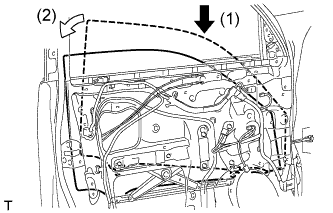
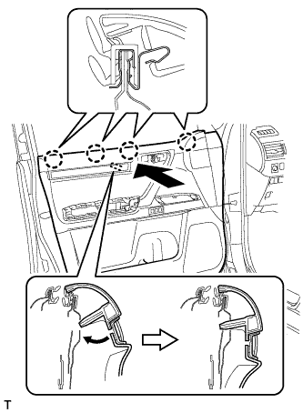

FRONT DOOR BELT MOULDING > INSTALLATION |
| 1. INSTALL FRONT DOOR BELT MOULDING LH |
Attach the 6 claws to install the front door belt moulding.
| 2. INSTALL FRONT DOOR GLASS RUN LH |
 |
Install the front door glass run.
| 3. INSTALL FRONT DOOR GLASS SUB-ASSEMBLY LH |
Connect the cable to the negative (-) battery terminal.
Connect the power window regulator master switch assembly and move the front door glass sub-assembly so that the door glass bolt installation locations can be seen.
Disconnect the cable from the negative (-) battery terminal and power window regulator master switch assembly.
| Condition | Waiting Time |
| Vehicle enrolled in G-BOOK system | 6 minutes |
| Vehicle not enrolled in G-BOOK system | 1 minute |
|  |
Insert the front door glass sub-assembly into the front door panel along the front door glass run as indicated by the arrows in the order shown in the illustration.
 |
Install the front door glass sub-assembly with the 2 bolts.
| 4. INSTALL OUTER REAR VIEW MIRROR ASSEMBLY LH |
Attach the claw to install the outer rear view mirror, and then install the 3 nuts.
w/ Side Monitor System:
Connect the 2 connectors and attach the clamp.
w/o Side Monitor System:
Connect the connector and attach the clamp.
| 5. INSTALL FRONT DOOR SERVICE HOLE COVER LH |
Apply new butyl tape to the front door panel.
 |
Pass the front door lock remote control cable assembly and front door inside locking cable assembly through a new front door service hole cover.
Attach the front door service hole cover using the reference points on the front door panel.
| *1 | Reference Point |
 |
Attach the 2 clamps.
Install the bolt to the front door wire.
| 6. INSTALL FRONT DOOR INNER GLASS WEATHERSTRIP LH |
 |
Install the front door inner glass weatherstrip.
| 7. INSTALL FRONT DOOR TRIM BOARD SUB-ASSEMBLY LH |
 |
Connect the front door lock remote control cable assembly and front door inside locking cable assembly.
Connect 2 connectors.
|  |
Attach the front door trim board sub-assembly by attaching the 4 claws of the front door inner glass weatherstrip as shown in the illustration.
 |
Attach the 12 clips and front door trim board retainer to install the front door trim board sub-assembly.
Install the 3 screws.
| 8. INSTALL POWER WINDOW REGULATOR MASTER SWITCH ASSEMBLY WITH FRONT DOOR ARMREST BASE PANEL |
Connect the connector.
Attach the 2 clips, 4 claws and guide to install the power window regulator master switch assembly with front door armrest base panel.
| 9. INSTALL FRONT ARMREST ASSEMBLY LH |
Attach the 7 claws and 7 guides to install the front armrest assembly.
| 10. INSTALL FRONT DOOR INSIDE HANDLE BEZEL PLUG LH |
Attach the 3 claws to install the front door inside handle bezel plug.
| 11. INSTALL FRONT DOOR LOWER FRAME BRACKET GARNISH LH |
Attach the 2 claws to install the front door lower frame bracket garnish.
| 12. CONNECT CABLE TO NEGATIVE BATTERY TERMINAL |
| 13. INITIALIZE POWER WINDOW CONTROL SYSTEM |
Initialize the power window control system (Click here).
| 14. ADJUST SIDE TELEVISION CAMERA ASSEMBLY |
w/ Rear View Monitor System:
Adjust the side television camera (Click here).
Parking Assist Monitor System:
Adjust the side television camera (Click here).